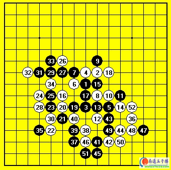

04年全国赛最后一轮对薛文曦[图]
#1 04年全国赛最后一轮对薛文曦[图]作者：有志青年 发表时间：2007-3-18 13:57:25

黑：薛文曦
白：吴镝
白胜
这是04年北京全国赛的最后一轮对局.对手是上海的薛文曦.最后一轮对前三台已经没什么影响了，在比赛开始前大家都已经清楚前面的成绩。可对我的成绩却还有很大的影响。最后一轮我和薛文曦谁胜谁进前8，如果和了将双双掉出前十。所以此战必须胜。和棋都是无法接受的。由于是我开局，给了我一定的主动权。比赛开始后我回忆薛下过的棋，似乎以山月梳星居多。比较少见的就是明星了，印象中没看到他下过。而明星可说我最熟悉的开局了。虽然说是黑优势开局。可黑棋想取胜难度非常大。白有很多强防。果然薛选择了交换。黑5？看到这个5让我想到了对蔡力杰那盘。那盘棋前面蔡走的非常快，比赛后告诉我是因为看过了我去年的棋评才走的很快的。而现在这个5我去年的棋评里也写到了，是和来华参加亚洲杯的ANTS交流时下的，当时我执白中盘强杀了。难道又是对我有准备才走的这个？看来上海棋手对我的准备还真不少。
可这个黑5前面是不允许我变化的。一路定式下到16。这里薛进入了长考。而且面带苦笑。看到这个我心中安定了。原来是以为我对这个黑5不熟悉来骗的。可惜他没看到我去年的棋评，所以不知道我对明星的熟悉程度。看现在的情况他自己反而忘记了后面的变化。机会来了。
果然薛长考50多分钟下出了实战的17。18当仁不让。18后黑想进攻已经难度很大了，而白在右上的优势形成。为白后面的攻击打下良好的基础。薛又进攻长考下出了19-23的变化。24我选择了稳妥的下法。25意料之中。26后黑彻底丧失了攻击的可能。27是期待这里黑可以交换取得先手。29活三是问题。很明显我的30出乎黑棋意料。30后黑在D12有一手必须应。而白满意的取得了28.30这个斜二。这个斜二是我从24开始就预谋的。有了这个点我在右下的攻击才有保障。实战35后白如愿取得先手，36最正常的攻击方法。这个时候因为28.30这个斜线的存在，黑的冲效果已经不大了。实战的37可以说很强的防守。利用先手想把这个斜线交换掉，可38后我又取得了对右下绝对的控制权。39-47。黑无奈的交换防守。48本来不是我最初的打算，因为这个局部想杀很难，除非骗杀。不过这个时候薛的时间已经只有10分钟了，而我还有50多分钟。时间上的绝对优势必然会对计算产生影响，而且我看黑就算防住我也可以取得这个局部的先手，之后可以去上面进攻了。于是48开始强行做杀。果然，时间对薛产生了影响，他很快走出了49的败招，50后白必胜。
这盘棋黑战术上出现了问题，因为开局方是我，明显我对明星很熟悉，而黑却采用了自己不熟悉的走法。导致先手迅速易手。加上前面消耗的时间过多。这才导致最后的脆败。薛做为一名出色的棋手这次和我一样状态低迷。只能期待下次比赛的崛起了。而我在取胜这盘后侥幸进入了前8，算是没太丢脸：）
#2 Re:04年全国赛最后一轮对薛文曦[图]作者：五子天下 发表时间：2008-3-30 10:57:14
交换是什么意思？？？？ 实战是什么意思？